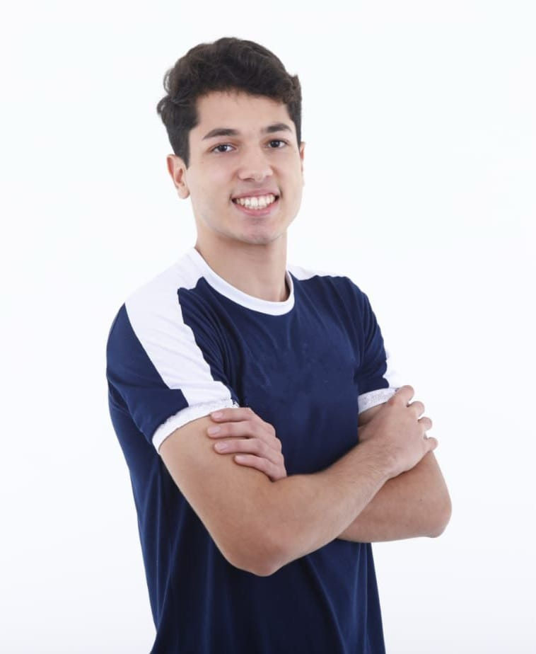
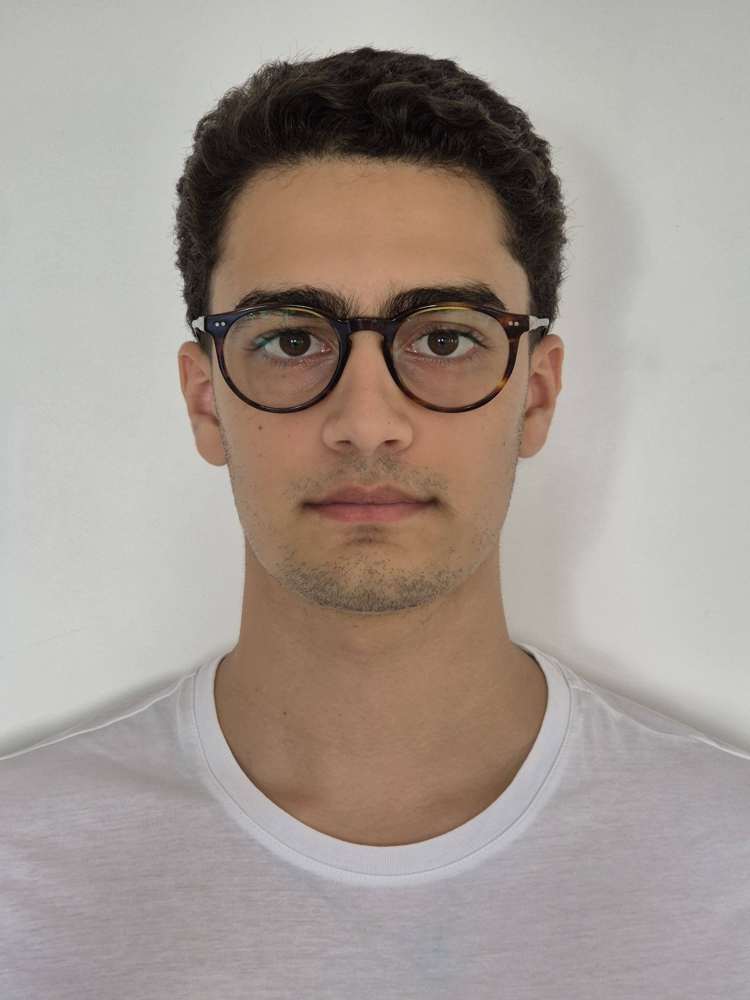
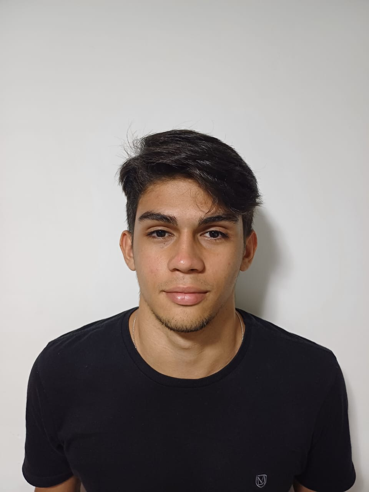

| Nomes: | Fotos: | Link GitHub: | Link Linkedln: |
|---|---|---|---|
| Artur Borges Dubeux Nogueira | GitHub Artur | Linkedln Artur | |
| Eduardo Henrique Hazin Palhares |  | GitHub Eduardo | Linkedln Eduardo |
| Matheus Arantes Almeida |  | GitHub Matheus | Linkedln Matheus |
| Roberto Figueirôa Mendes Xavier Filho |  | GitHub Roberto | Linkedln Roberto |
| Rodrigo Carneiro Campelo de Paiva | GitHub Rodrigo | Linkedln Rodrigo |
-Entender e mexer no código do Arduino foi um desafio, mas superamos vendo vídeos, testando o código diversas vezes e fazendo anotações
-Montar e deixar funcional o sistema dos cabos e das placas com Arduino também foi bem desafiador, mas pedimos ajuda para os professores e também fizemos testes diversos
-Pensar no design do nosso produto. A gente testou cores, pensou em cortes para conseguir fazer com que o sensor ficasse em contato com a superfície da lata e, portanto, conseguimos resolver esse desafio também
-Aprendemos o valor do trabalho em equipe, atribuindo funções específicas para cada um dos integrantes e ajudando no aprendizado do grupo
-Conseguimos aprender a base do uso do Arduino e dos Kits
-Aprendemos a criar uma IoT funcional
-Os diversos teste e fracassos fizeram com que a gente conseguisse aprimorar ainda mais nosso projeto